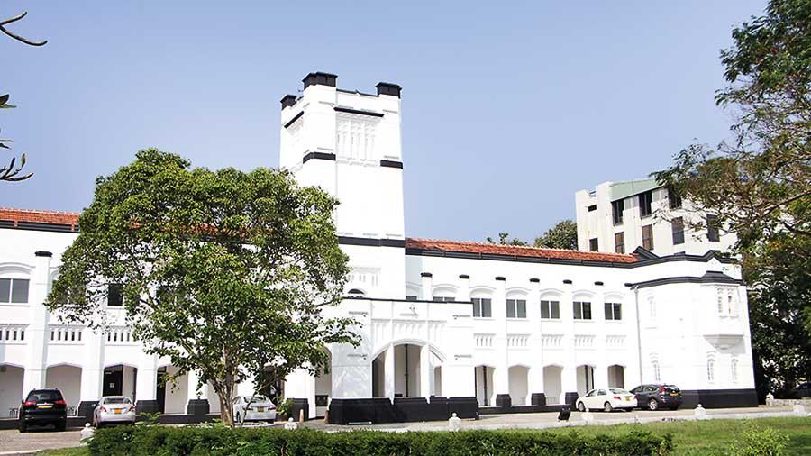

HISTORY
The University of Ceylon was established by the State Council in April 1942. The first Vice-Chancellor of the new University, Sir Ivor Jennings, hoisted the flag on July 1942 at the College House where his office and the central administration were located. The nucleus of the University was formed by amalgamating the Ceylon Medical College founded in 1870 and the Ceylon University College founded on 21, January 1921, both of which were incorporated into the University. Therefore, the history of the university goes back to the nineteenth and early twentieth centuries. The Medical College owed much to the generosity of philanthropists such as Mudaliyar S. Rajapakshe, Mr.Charles Henry de Soysa, Muhandiram A. Simon Fernando Wijegooneratne and Mudaliyar Vimala Gunawardana. In 1888, the Licentiate in Medicine and Surgery (LMS) of the College was recognized to produce fully qualified medical practitioners. In 1920, the government purchased “Regina Walauwa”, now named “College House” on the recommendation of Sir Edward Denham. The University College was formally opened on 21, January 1921. College House, the then “Regina Walauwa” which is today considered a national heritage site, was a family house that belonged to Arthur de Soysa, the grandson of the philanthropist Sir Charles Henry de Soysa. The library, established through Sir P. Arunachalam’s gift of his late son, Mr. A. Padmanabha’s books were housed in a room at College House. The old Royal College buildings were taken over in 1923 and the library moved from College House to the Villa Venezia an Observatory provided in the College grounds. On the recommendation of the College Council, the Government declared land in Buller’s Road, Colombo, as a University site in March 1924. A Draft University Ordinance was prepared in June 1925. In early 1926 controversy arose over the location of the University. The Governor’s Committee in February 1927 reported in favor of the Uyanwatte site in the Dumbara Valley, near Kandy, and recommended that the University should be of the ‘unitary’ type in teaching and residential facilities. Sir P. Arunachalam expired two months before the Legislative Council accepted the University in principle in February 1924. Mr. Marrs, the first Principal who gave nearly eighteen years of his life to the development of the College and the creation of the University of Ceylon, retired in July 1939.
